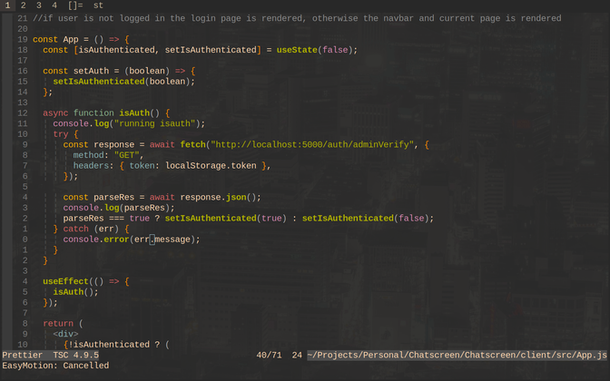
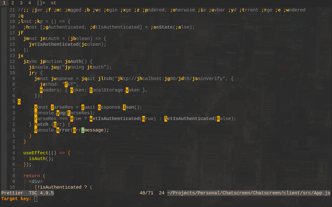
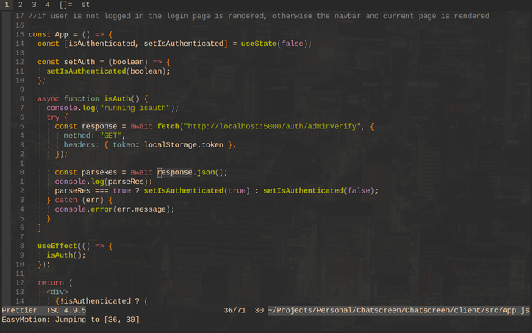
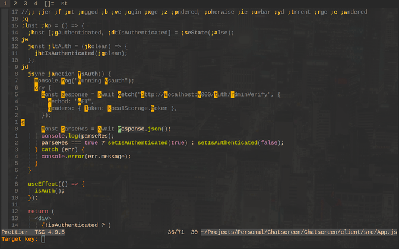
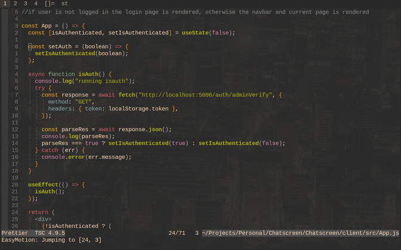
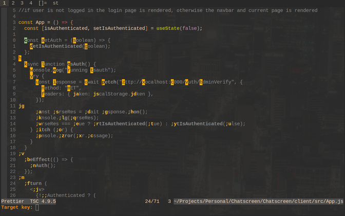
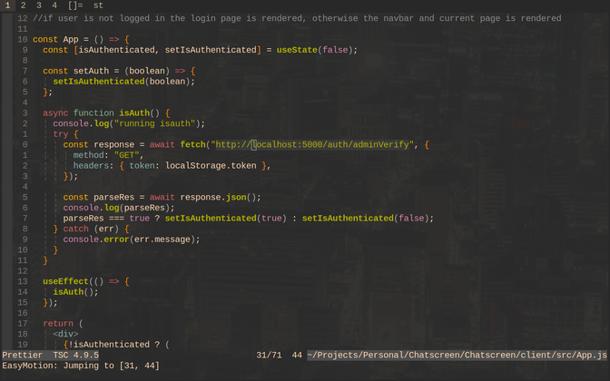
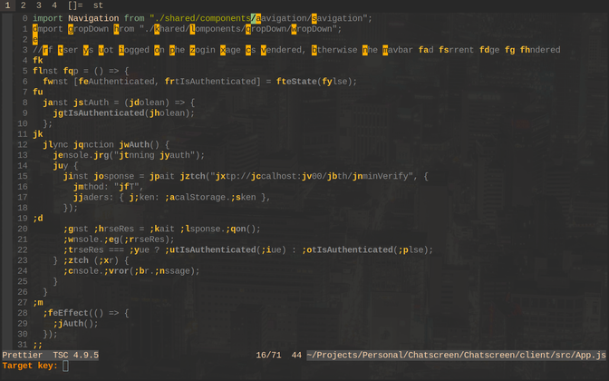
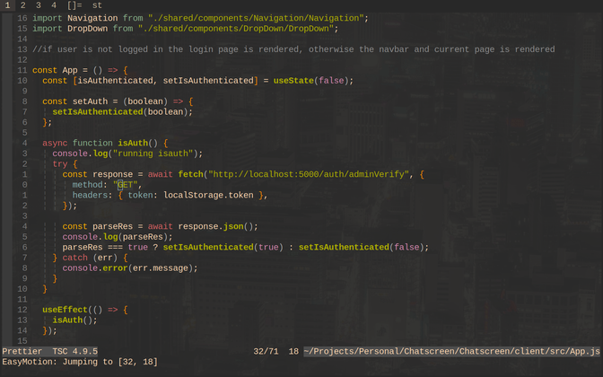

<
Easy Motion:
Made by easymotion
Watch Video
Open up a file in vim

Press ',' twice followed by 'b' to display options for
moving back from our current cursor position

Pressing 'o' will take us 4 lines upwards to the where the
corresponding word 'response' is located

Again we will press ',' twice followed by 'b' to display
options for moving back from our current cursor position

Pressing 'j' followed by 'q' will take us 12 lines upwards
to the where the corresponding word 'const' is located

Press ',' twice followed by 'w' to display options for
moving foward from our current cursor position

Pressing 'o' will take us 7 lines downwards to the where the
corresponding word 'localhost' is located

Again we will press ',' twice followed by 'w' to display
options for moving foward from our current cursor position

Pressing 'j' followed by 'f' will take us 16 lines downwards
to the where the corresponding word 'GET' is located

<